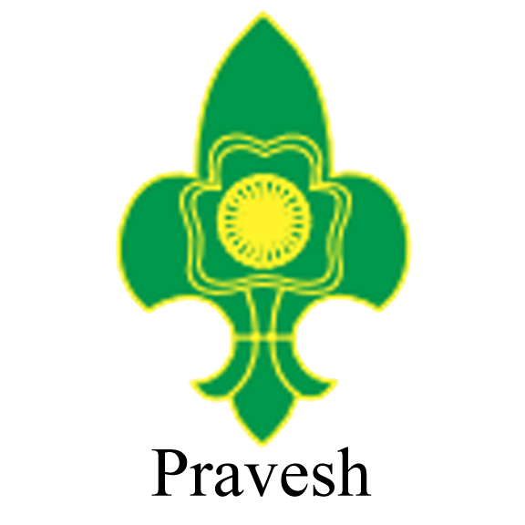
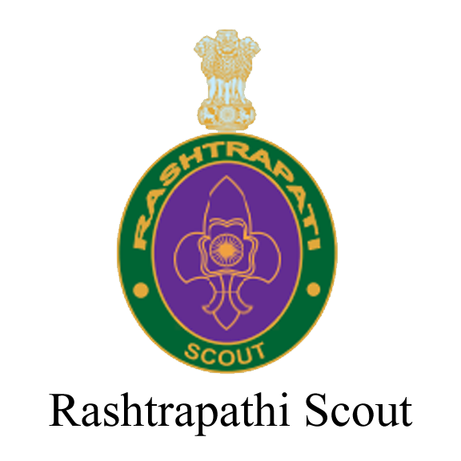
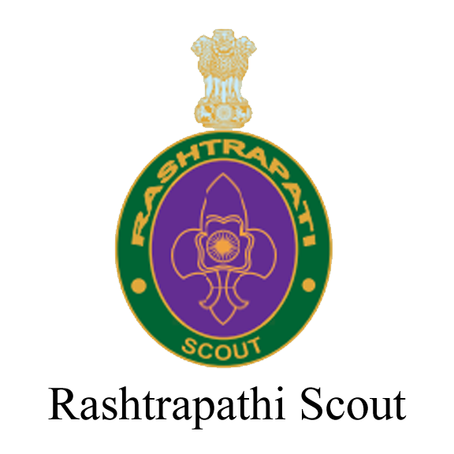

𝑆𝑐ℎ𝑒𝑚𝑒 𝑜𝑓 ğ´ğ‘‘ğ‘£ğ‘ğ‘›ğ‘ğ‘’ğ‘šğ‘’ğ‘›ğ‘¡ğ‘†ğ‘ğ‘œğ‘¢ğ‘¡
A boy who is a citizen of India and who has completed 10 years but not completed 17 years of age is eligible to become a Scout Aspirant. A Scout Aspirant shall complete Pravesh requirement and will work for three months to the satisfaction of the Scout Master before being invested as a Scout.
PRAVESH Requirements
1. (i). Have brief information of the origin of Scouting along with definition, purpose principles and method of the Bharat Scouts and Guides.
(ii). A Scout Aspirant must have holistic knowledge of the movement.
2. Know the Scout Promise, Law & Motto.
3. Have knowledge about the Scout, Sign, Salute and left hand shake and be able to demonstrate.
4. Render daily good turn at home and maintain a diary at least for a month.
5. Know the parts of Scout Uniform and how to wear it correctly.
6. Know the composition and significance of the National Flag, the Bharat Scouts & Guides Flag and the World Scout Flag and Flag Etiquette.
7. Sing correctly National Anthem, BSG Prayer and BSG Flag Song. Know about the composer, duration and meaning of the song.
8. Attend at least four Troop Meetings. Amendments due to Covid-19: This can be substituted with Zoom Meetings/ Whatsapp Group/ Phone Calls and can share individual activity at home.
9. Undertake a 4 hour purposeful outing with his Patrol. Amendments due to Covid-19: Make a report on your favourite places in your locality.
(iii). He then makes the Scout Promise to the Scout Master and is invested as a Scout. He is eligible to wear Scout uniform and Membership Badge. The Membership Badge is a cloth badge with green background and Fleur-de- lis in yellow superimposed by the Trefoil with Ashoka Chakra also in yellow in the centre. The badge is worn in the centre of the pleat of the left pocket of shirt or at the same place on jersey. Membership badge shall be issued by the Local or the District Association as the case may be, on the recommendation of the Scout Master.
[a] Scouts should be given opportunity so that they acquire the habit of doing at least one Good Turn every day.
[b] The Scout Promise
“On my honour, I promise that I will do my best
To do my duty to God* and my country,
To help other people and
To obey the Scout Law’
*The word ‘Dharma’ may be substituted for the word ‘God’, if sodesired.
[c] The Scout Law
1. A Scout is Trustworthy.
2. A Scout is loyal.
3. A Scout is a friend to all and a brother to every other Scout.
4. A Scout is courteous.
5. A Scout is a friend to animals and loves nature.
6. A Scout is disciplined and helps protect public property.
7. A Scout is courageous.
8. A Scout is thrifty.
9. A Scout is pure in thought, word and deed.
[d] Motto
The Scout motto is “ Be Prepared”. This has to be achieved by being physically strong, mentally awake and morally straight.
[e] Sign
The Scout sign is given by raising the right hand in level with the shoulder, palm to the front with three fingers stretched together and the thumb closing on the little finger.
[f] Salute
The Scout Salute is given by raising the right arm smartly to the level of the shoulder, palm to the front with three fingers stretched together, the first touching the forehead above the centre of right eye brow and thumb closing on the little finger. After salute the arm is smartly brought down. If a stick or thumb stick is carried, it must be passed to left hand or kept under left arm pit. When a staff is carried the salute is given with left forearm bent at right angle at elbow with three fingers open, thumb closing on the little finger palm down wards, the first finger touching the staff. When hands are occupied, the salute is given by eyes left or right as the case may be.
Click here for download the Pravesh Requirements in Malayalam
-------___-------___-------___-------___-------___-------___-------___-------
Scheme for Advancement of a Scout
A boy who is a citizen of India and who as completed 10 years but not completed 17 years of age is eligible to be become a Scout Aspirant. A Scout Aspirant shall complete Pravesh requirement and will work for three months to the satisfaction of the Scout Master before being invested as a Scout. Having worked for at least three months and attended four Troop Meetings a Scout Aspirant can be invested as a Scout on completion of Pravesh Test. *If a Scout continues to be in the School he should be allowed to remain in the unit till he completes 18 years of age.


 

i. A Pravesh Scout will work at least for 6 months to qualify for Pratham Sopan.
ii. A Pratham Sopan Scout will work for at least 6 months to qualify for Dwitiya Sopan.
iii. A Dwitiya Sopan Scout will work for at least 6 months to qualify for Tritiya Sopan.
iv. A Tritiya Sopan Scout will work for at least 9 months to qualify for Rajya Puraskar Badge.
v. A Rajya Puraskar Scout shall work for 12 months to appear for Rashtrapati Scout Award Test.
Amendments due to Covid-19
vi. Efficiency Cords:
1. Scout Efficiency Cords are made of chiffon Threads specially designed, supplied by N.H.Q. It will be worn under the right shoulder strap extending the cord to the top of right pocket stitched horizontally just above the BSG Stripe.
2. After Dwitiya Sopan Badge, a Scout may earn more proficiency badges.
3. If a Dwitiya Sopan Scout earns six proficiency badges in all shall be awarded Blue Cord by the Assistant Dist. Commissioner.
4. If a Tritiya Sopan Scout earns twelve proficiency badges in all shall be awarded Green Cord by the Dist. Commissioner
5. If a Rajya Puraskar Scout earns eighteen proficiency badges in all shall be awarded Golden Cord by the District Chief Commissioner.
vii. JUNGLE GOPH:
a. After the Rashtrapati Award, a Scout is eligible to earn Jungle Goph Cord which will be presented by the Dist. Chief Commissioner.
b. Among the below mentioned Proficiency Badges, he has to qualify five Proficiency Badges not earned earlier: Back woodsman, Civil Defence, Map Maker, Archer, Meteorologist, Camper, Climber, Pioneer, Rescuer, Signaller, Explorer, Herbalist, Hiker, Naturalist, Stalker, Tracker, Fireman, and Swimmer.
c. A Jungle Goph Cord is of Olive Green colour and will be worn in place of Gold Cord.